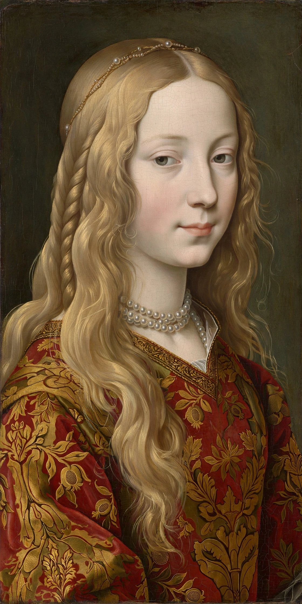

Lucrezia Borgia
From Wikipedia, the free encyclopedia
| Born | 18 April 1480, Subiaco, Papal States |
|---|---|
| Died | 24 June 1519 (aged 39), Ferrara |
| Spouses | Giovanni Sforza; Alfonso of Aragon; Alfonso I d'Este |
| Father | Pope Alexander VI |
| Family | House of Borgia |

Lucrezia Borgia (18 April 1480 – 24 June 1519) was an Italian noblewoman of the House of Borgia, the daughter of Pope Alexander VI (Rodrigo Borgia) and his mistress Vannozza dei Cattanei. Her family's political machinations made her a pawn in successive marriage alliances, and later legend cast her as a femme fatale poisoner — a reputation modern historians largely regard as slander propagated by the Borgias' enemies.
Life
Lucrezia was married three times: first to Giovanni Sforza, Lord of Pesaro (annulled in 1497 under controversial circumstances), then to Alfonso of Aragon, Duke of Bisceglie (murdered in 1500, widely attributed to her brother Cesare Borgia), and finally to Alfonso I d'Este, heir to the Duchy of Ferrara, in 1502. As Duchess of Ferrara she became a respected patron of the arts, corresponding with poets such as Pietro Bembo and Ludovico Ariosto, and governed the duchy during her husband's absences. She died in 1519 of complications following childbirth.
Reputation
Rumours of incest, poison rings, and murder attached to Lucrezia's name during her lifetime and were amplified by Victor Hugo's 1833 play and Donizetti's opera Lucrezia Borgia. Modern biographers, working from her extensive correspondence, portray a politically constrained but capable woman whose notoriety chiefly reflects hostility toward her father and brother.